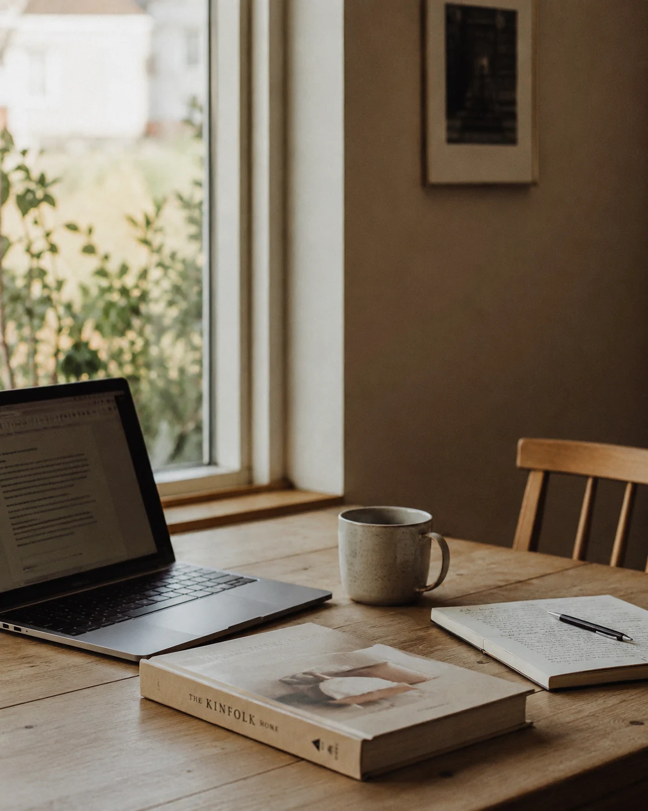
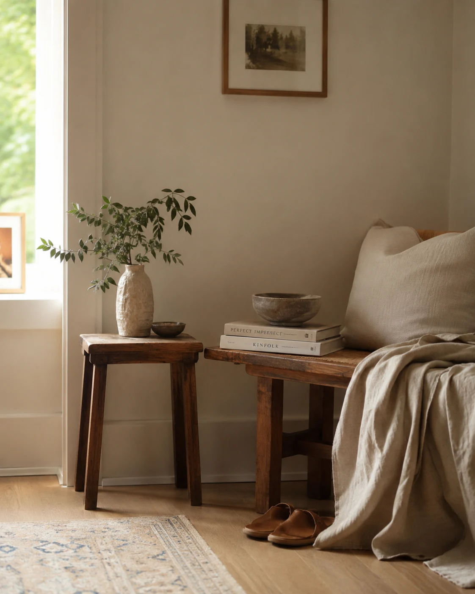
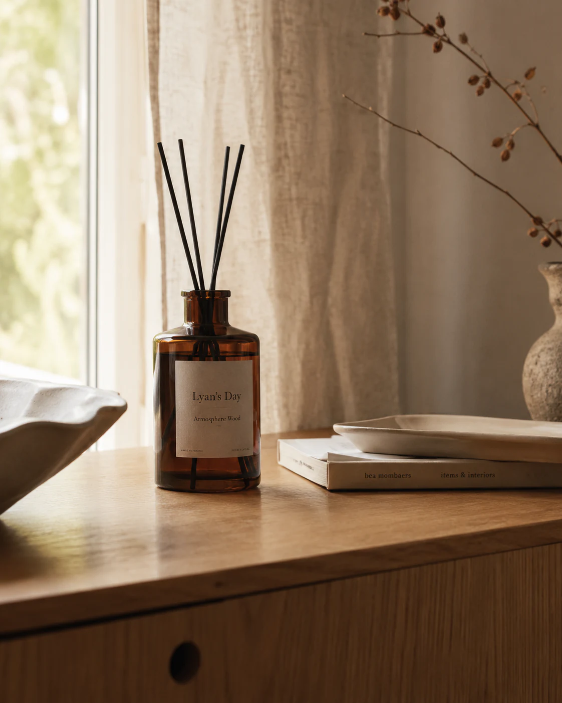
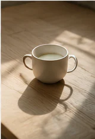
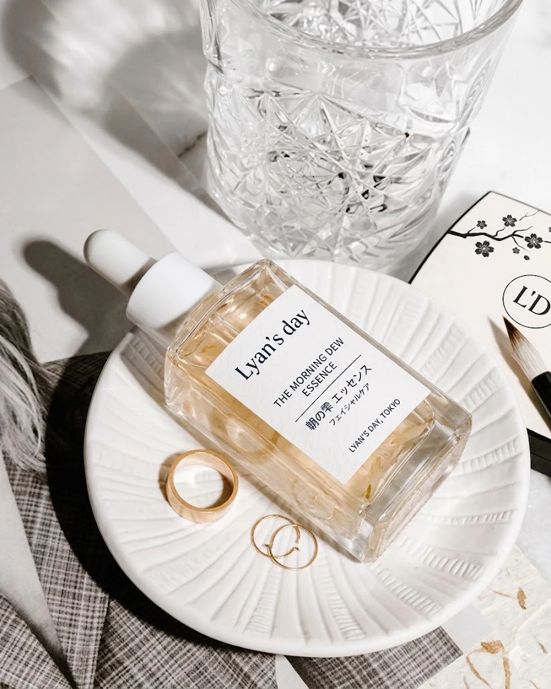
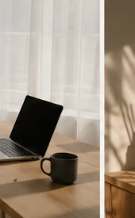

Une table avant le travail
La première chose que nous préparons le matin n'est pas un écran, mais une place où nous asseoir.
objects & spaces journal
Objets, espaces et moments d'une vie à deux.
Une table avant le travail, une tasse gardée près d'un livre, la lumière qui traverse le salon. Nous notons ici les détails qui accompagnent nos journées.
Lire les dernières notes

dernières notes
Cinq traces récentes, gardées telles qu'elles se sont présentées.

La première chose que nous préparons le matin n'est pas un écran, mais une place où nous asseoir.

Les meilleurs objets finissent par disparaître dans le rythme quotidien.
Certains coins de la maison changent complètement selon l'heure.

Un soin, du thé et la fenêtre ouverte donnent déjà une forme à la journée.

Tous les lieux n'ont pas besoin d'être productifs pour nous être utiles. Celui-ci nous laisse simplement rester.
à propos
Lyan's Day est tenu à deux, par deux personnes qui remarquent des choses différentes : les objets, les espaces, les soins, l'atmosphère et les routines du quotidien.
Nous gardons une trace de ce qui est là : une étagère qui change, un sac posé dans l'entrée, un café où revenir, une lumière de fin de journée.
la lettre
Une lettre occasionnelle, quand il y a quelque chose à partager.